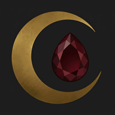

Atmospheric cycle telemetry, comfort flares, and gothic partner care. No pastel clichés. No corporate fluff.
A cold, dark-minimalist haven to log cycle starts, forecast lunar phases, and dispatch comfort directives without pink banners or algorithmic judgment.
For the partner who bears the flame. Never ask awkward questions or guess what is needed.
For technical assistance, bug reports, or manual account erasure verification, contact our sanctuary engineering team directly:
Direct Contact: privacy@geysimonyan.com